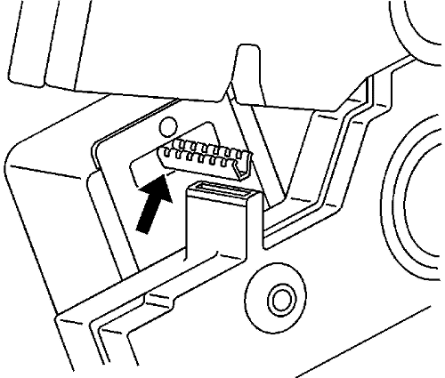

Reparaciones del terminal del conector — Reparación de Terminales
Herramientas especiales
| • | J-38125 Juego de reparación de terminales |
| • | J-38125-6 Herramienta de engarce |
| • | J-38125-7 Herramienta de engarce |
| • | J-38125-8 Herramienta de engarce |
| • | J-38125-64 Herramienta de engarce |
| • | J-38125-101 Herramienta de engarce |
| • | J-38125-641 Herramienta de engarce |
| • | J-38125-642 Herramienta de engarce |
| • | J-38125-643 Herramienta de engarce |
Si desea informarse sobre herramientas regionales equivalentes, consultar Herramientas especiales .
Utilice los procedimientos de reparación siguientes para cada tipo de terminal:
Nota: El primer paso de todas las reparaciones de terminales es encontrar la vista frontal del conector en SI.
Terminales de junta de cable
- Corte el terminal entre el núcleo y el engarce de aislamiento para minimizar la pérdida de cable.
- Desmonte la junta antigua.
- Aplique la junta de cable adecuada seleccionada del kit, según el diámetro del cable. Deslice la junta a lo largo del cable para poder quitar el aislamiento.
- Para minimizar la pérdida de cable, quite sólo el aislamiento necesario.
- Usando la vista frontal del conector, determine la herramienta de engarce y la mordaza de engarce necesarias.
- Alinee la junta con el extremo del aislamiento del cable.
- Coloque el cable pelado y la junta en el terminal.
- Engarce primero manualmente las aletas del núcleo.
- Engarce manualmente las aletas del aislamiento alrededor de la junta y el cable.
- Suelde todos los terminales engarzados manualmente, salvo los tamaños Micro-Pack 100 y 0,64.
Terminales sin junta
- Corte el terminal entre el núcleo y el engarce de aislamiento para minimizar la pérdida de cable.
- Para minimizar la pérdida de cable, quite sólo el aislamiento necesario.
- Coloque el cable pelado en el terminal.
- Engarce primero manualmente las aletas del núcleo.
- Engarce manualmente las aletas del aislamiento alrededor del cable.
- Suelde todos los terminales engarzados manualmente, salvo los tamaños Micro-Pack 100 y 0,64.
Terminal de tamaño Micro-Pack 100W
Los conectores Micro-Pack 100W disponen de pequeños terminales difíciles de manejar y sujetar al engarzarlos. A fin de ayudar al técnico a engarzar estos terminales, se ha desarrollado una nueva herramienta engarzadora. La herramienta engarzadora J 38125-101 (mordaza W) se ha desarrollado para engarzar los terminales Micro-Pack 100W. La herramienta engarzadora J 38125-101 (mordaza W) dispone de un bloque de sujeción del terminal que sujetará el terminal en posición durante su engarzado. Una vez retirado el terminal del conector, realice el siguiente procedimiento para reparar los terminales Micro-Pack 100.
- Corte el cable tan cerca del terminal como sea posible.
Nota: Tras cortar el terminal dañado del cable, determine si el cable restante es suficientemente largo como para alcanzar el conector sin aplicar tensión sobre el cable. Si el cable no fuera suficientemente largo, empalme un pequeño trozo de cable de igual sección al cable existente y, a continuación, engarce el nuevo terminal en el cable añadido.
- Pele 5 mm (3/16 pulg.) de aislamiento del cable.

- Presione el localizador accionado por muelle de la herramienta engarzadora J 38125-101 (mordaza W) hasta que la herramienta de retención del terminal sea completamente visible.

- Introduzca el terminal en la herramienta engarzadora hasta que las aletas del núcleo estén enrasadas con el yunque de la herramienta engarzadora. Asegúrese de que las aletas apunten hacia el molde de la herramienta engarzadora y libere el localizador de muelle. El localizador sujetará el terminal en posición. Inspeccione la alineación de las aletas del terminal con el molde de la herramienta engarzadora. Si las aletas del terminal son más anchas que el molde de la herramienta engarzadora, retire el terminal y doble ligeramente las aletas del terminal.
- Coloque el cable desnudo en el terminal.
- Engarce el nuevo terminal en el cable. Si se produce una obstrucción, presione el mecanismo de liberación de emergencia para abrir el aplicador.
Terminal de tamaño Micro 0,64
Los conectores Micro 64 disponen de pequeños terminales difíciles de manejar y sujetar al engarzarlos. A fin de ayudar al técnico a engarzar estos terminales, se ha desarrollado una nueva herramienta engarzadora. La J 38125-64 (mordaza M) se ha desarrollado para engarzar los terminales Micro 64. La herramienta engarzadora J-38125-64 dispone de un bloque de sujeción del terminal que sujetará el terminal en posición durante su engarzado. La herramienta engarzadora J-38125-64 está también diseñada para engarzar tanto el cable como el aislamiento al mismo tiempo.
Una vez retirado el terminal del conector, realice el siguiente procedimiento para reparar los terminales Micro 64.
Nota: Tras cortar el terminal dañado del cable, determine si el cable restante es suficientemente largo como para alcanzar el conector sin aplicar tensión sobre el cable. Si el cable no fuera suficientemente largo, empalme un pequeño trozo de cable de igual sección al cable existente y, a continuación, engarce el nuevo terminal en el cable añadido.
- Corte el cable tan cerca del terminal dañado como sea posible.
- Pele 5 mm (3/16 pulg.) de aislamiento del cable.

- Presione el localizador accionado por muelle de la herramienta de engarce hasta que la herramienta de retención del terminal quede completamente visible.

- Inserte el terminal en la herramienta de retención de terminal adecuada hasta que toque fondo. La herramienta de retención adecuada se determina por el tamaño del cable. Asegúrese también de que las aletas del terminal apuntan hacia el formador de la herramienta y al localizador de desbloqueo.
- Inserte el cable pelado en el terminal. El aislamiento deberá quedar visible a ambos lados de las aletas de aislamiento del terminal.
- Comprima los mangos hasta que la carraca se libere automáticamente.
- Coloque el terminal en la cavidad correcta y monte el conector.
| © Copyright Chevrolet Europe. Reservados todos los derechos |